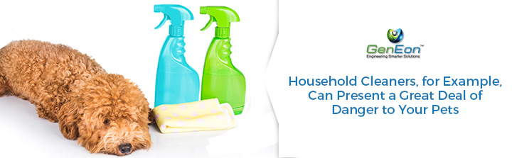
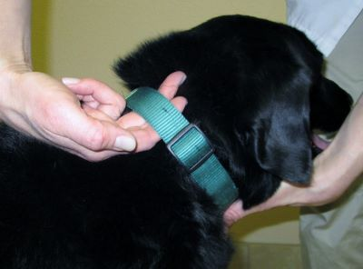
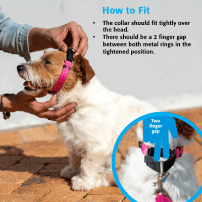
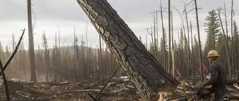
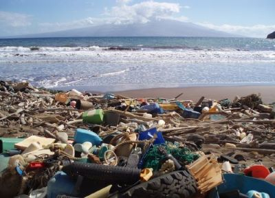
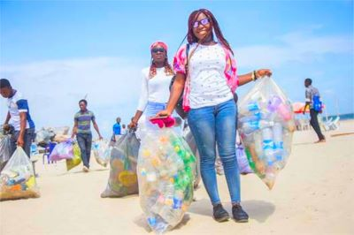

What we can do as a human?
Never buy an animal from a pet shop and never give an animal as a gift. Adopt your companion animals from shelters. Pet shops buy from puppy mills and large-scale breeders who contribute to the population crisis and whose over-bred animals are often very unhealthy. Many an animal has been abandoned because people aren't prepared to care for it. Discuss it with your friends and family first.
Use natural cleaners.
Hazardous chemicals are harmful to your animals' health. Use only non-toxic cleaners in your home, and always clean up antifreeze (which tastes sweet to animals). Contact the Environmental Protection Agency (800-424-9346) to learn how to properly dispose of hazardous chemicals.

Be sure to keep collars and tags on dogs and cats (even if they are indoors). In case of an emergency, they can be returned home safely. Be sure to have a secure fence for dogs in your yard. We instinctively grasp the natural bond between children and animals. We fill babies' cribs with stuffed animals, put floating rubber ducks in their baths, and enjoy animals as the main characters in many children's books. This natural connection, the child-animal relationship, provides a great opportunity for parents and teachers to instill the core value of leading a compassionate life.


Protect the enviroment.
One of the easiest and most effective ways to help wildlife is to preserve the environment in which the animals live.
Volunteer with organizations in your area to restore native forests, grasslands, and coastal ecosystems by planting native species, manually removing invasive plant species, and taking out old fences.
Participate in or hold your own local trash clean-up to help protect the habitats of imperiled species and other wildlife.

Save energy. Driving less, using energy efficient vehicles and appliances, and simply turning off the lights when you leave a room reduce energy use. Many power plants rely on coal and other fossil fuels that damage wildlife habitat when they are extracted, and pollute the environment and contribute to climate change when burned. Unplug appliances and chargers when not in use to eliminate electricity bleeding. You can also consider joining a community solar program or adding solar technology to your home or business.
Respect wild animals by keeping a safe distance away, not approaching them, and not removing them from their environment. If you find young animals, particularly in the spring, do not handle them. Mothers often leave young for extended periods to forage. Although the young may appear to be abandoned, the mother will almost certainly return within 24 hours, and handling the young puts them in danger. If you encounter an injured wild animal, contact a certified animal rescuer in your area.
Let's keep the beach clean.
All solutions often start with awareness. If you're here, you're probably already aware of ocean pollution and the problems it's causing. If you are, then take it to the next level and spread awareness to your friends and family. Living in the Internet era has its advantages. Use them. Share news about ocean issues and help spread the word. If all of us do at least one thing to help keep our oceans clean, it will make a huge difference, not just to marine life, but to all life.


Take responsibility for your actions. Acknowledge that everything you do impacts our planet and take that thought with you wherever you go and whatever you do.
Remember that whenever you let your food go to waste, when you leave the water running, or when you are drinking coffee from paper cups, you are creating an environmental chain reaction that will find its way to our oceans.
Aside from keeping that at the front of your mind, you can also help reverse or reduce the effects of others' irresponsible actions. You can pick up litter and join activities like the 10 Pieces Movement where travellers are challenged to pick up 10 pieces of trash during their adventures.